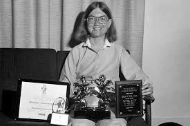
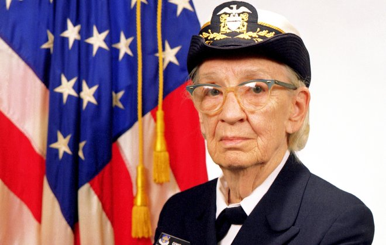
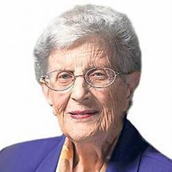

Personalidades
Você sabia que mulheres sempre foram muito presentes na área da informática? Confira abaixo grandes figuras femininas e suas principais realizações nesse ramo e, assim, se prepare para o jogo da memória a seguir:
Frances Allen

⠀⠀⠀⠀É uma das mentes brilhantes da história da computação, essa cientista norte-americana nasceu em 1932 e contribuiu efetivamente para a informática que conhecemos hoje; foi a pioneira no campo de otimização de compiladores e introduziu muitas abstrações, algoritmos e implementações que criaram a base para a tecnologia de optimização de programas. Frances Allen foi a primeira mulher a ganhar o prêmio Turing, o considerado o Nobel da informática, ganhou também vários outros prêmios de honra, rompendo sempre a barreira de gênero existente no mundo.
Carol Shaw
⠀⠀⠀⠀Essa cientista em especial, vem para quebrar os estereótipos de mulheres dentro do mundo dos Games. Carol Shaw foi a primeira mulher desenvolvedora de jogos eletrônicos no mundo, criou o 3-D Tic-Tac-Toe baseado no tradicional jogo da velha e na sequencia lançou seu jogo mais famoso: River Raid. Além de receber prêmios importantes, a cientista foi essencial para a luta pela igualdade de gênero nessa área.
Ada Lovelace

⠀⠀⠀⠀Uma das maiores influencias femininas na área da computação, Ada Lovelace é considerada a primeira programadora do mundo, na qual escreveu o primeiro algoritmo existente. Além desse marco histórico, essa cientista também colaborou efetivamente no projeto de Charles Babbage, no qual se refere ao primeiro modelo de computador. Ada é um grande incentivo para as mulheres nessa área, provando que essas sempre estiveram presentes.
Irmã Mary Kenneth
⠀⠀⠀⠀Um marco para a luta nas mulheres, a irmã Mary Kenneth foi uma freia que dedicou sua vida às ciências da computação, sendo a primeira mulher a se tornar doutora dessa área, atuava também, como militante pela inclusão de mulheres no mundo da informática. Outros marcos importantes, foram a escrita de 4 livros que são referências para esse ramo até os dias atuais e a participação no desenvolvimento da linguagem de programação BASIC utilizada por fins didáticos. A irmã Mary contribui muito para a luta feminina, sendo um exemplo de mulher.
Grace Hopper
⠀⠀⠀⠀Conhecidas como “rainha da computação”, “vovó COBOL” ou a “Grande Dama do software”, Grace Hopper foi uma figura de extrema importância para a programação. Ela desenvolveu a linguagem de programação Flow-Matic, que mesmo sendo extinta na atualidade, serviu de base para a criação do COBOL, utilizada ainda hoje. E assim, ganhou o nome “vovó COBOL”. Essa cientista é também considerada a autora do termo “bug”, muito comum nos dias de hoje.
Jean Sammet
⠀⠀⠀⠀Mais uma figura feminina importantíssima para informática, Jean Sammet foi uma das criadoras da linguagem COBOL (baseada na linguagem criada por Grace Hopper), que é muito utilizada por empresas. Escreveu o livro, considerado um clássico da computação, “Programming Languages: History and Fundamentals” e dirigiu o desenvolvimento da linguagem FORMAC, voltada para expressões algébricas.
Karen Sparck Jones